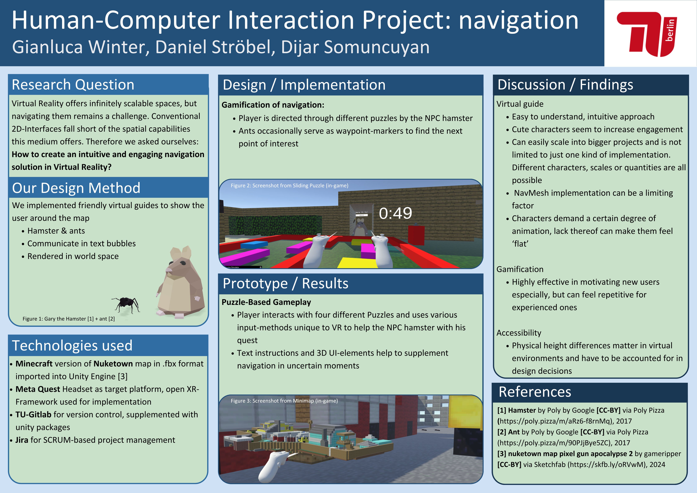
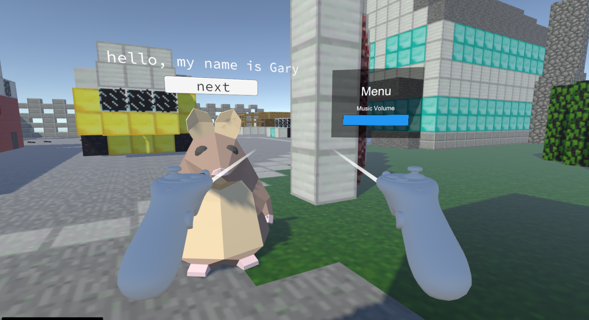
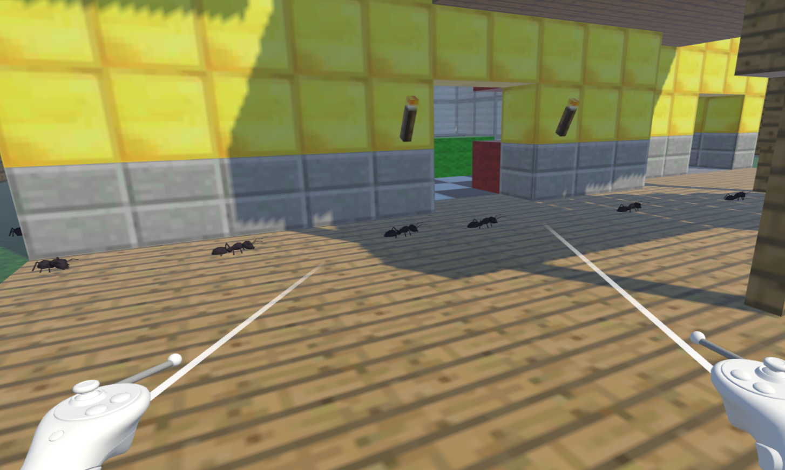
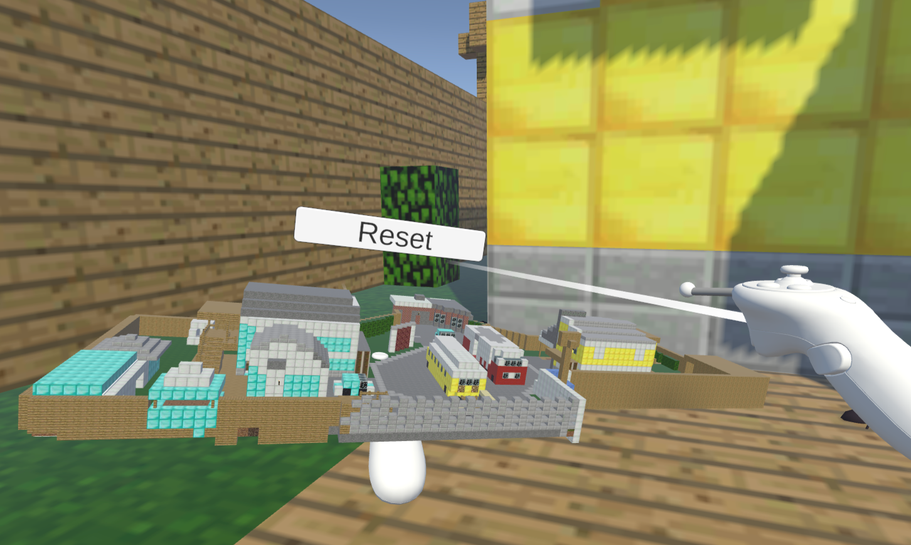
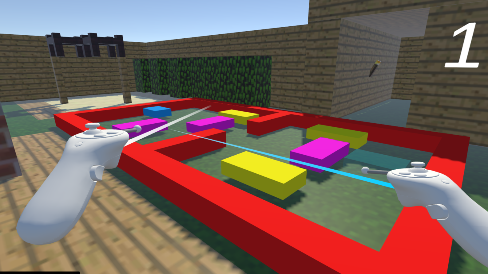

project 2/4

wissenschaftliches Poster, das unsere Arbeit zusammenfasst

unser Hauptcharakter-NPC, Gary der Hamster

Ameisen, die den Weg zum nächsten interessanten Punkt weisen

unsere erweiterbare Minimap, verfügbar per Knopfdruck

Schiebepuzzle-Minispiel, muss abgeschlossen werden, um das nächste Level freizuschalten

Spiel-Soundtrack
VR-Navigation & Agiler Workflow
Entwickelt im Rahmen eines Forschungsmoduls zur Mensch-Computer-Interaktion (HCI), untersucht dieses Projekt die Benutzernavigation in virtuellen Räumen. Das Ergebnis ist ein VR-Escape-Room-Erlebnis auf der Meta Quest 3, das diegetische Navigationshinweise – wie dynamische "Ameisenpfade" und Kompasse – nutzt, um Benutzer durch komplexe räumliche Rätsel zu führen.
Projektmanagement & Pipeline
Als Scrum Master für ein dreiköpfiges Team überbrückte ich die Lücke zwischen kreativem Design und
technischer Umsetzung. Ich koordinierte unsere Sprintziele mit Jira (Scrum) und etablierte einen
Git-Workflow, der uns eine effiziente Zusammenarbeit ermöglichte, ohne sich gegenseitig in die Quere
zu kommen.
Um unser Repository sauber zu halten, führte ich ein wöchentliches Integrationsprotokoll ein, das wir intern "Merge Mondays" nannten. Diese Routine half uns, Merge-Konflikte frühzeitig zu lösen und sicherzustellen, dass unser main-branch für regelmäßige Tests stabil blieb.
Narrative & NPC-Logik
Ich war verantwortlich für das Design und die technische Umsetzung von "Gary", einem Begleiter-NPC,
der von einer benutzerdefinierten Zustandsmaschine gesteuert wird. Dieses System verwaltete den
Lebenszyklus des Charakters, orchestrierte seine Spawnpunkte und löste kontextsensitive Dialoge
basierend auf dem Fortschritt des Spielers durch den Escape Room aus.
Um das Tempo und die Immersion der Benutzer zu beeinflussen, habe ich auch den Original-Soundtrack erstellt und implementiert (siehe unten).
Wichtige technische Implementierungen:
- Navigationssysteme: Implementierung mehrerer Wegfindungswerkzeuge unter Verwendung von Unitys Navigationsnetz, einschließlich eines dynamischen visuellen Pfads und einer erweiterbaren Minimap-Benutzeroberfläche.
- UI/UX-Experimente: Entwurf einer "Dark Mode"-Herausforderungsvariante. Dieser zeitgesteuerte Modus bietet eine erhöhte Intensität und satirisiert moderne Dark-Mode-Themes, was als Test für die Benutzereffizienz unter visuellem Druck dient.
- Interaktives Storytelling: Aufbau einer von Zustandsmaschinen gesteuerten Erzählstruktur, die den Spieler vom ersten Rätsel bis zu einer filmischen Endsequenz führt.
Spiel-Soundtrack
- Hardware: Meta Quest 3
- Kerntechnologien: Unity, OpenXR, C#
- Management: Jira (Scrum), Git/GitHub
- Kreativsoftware: Ableton Live